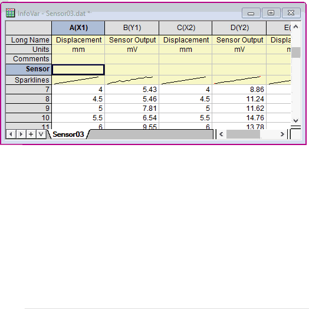

Von der GUI auf Metadaten zugreifen
GraphInterface-Access-Metadata
Innerhalb der grafischen Benutzeroberfläche (GUI) gibt es mehrere Möglichkeiten, um Zugang zu den Metadaten der Arbeitsmappe, die mit den importierten Dateien verbunden sind, zu erhalten.
- Zeigen Sie die Metadaten im Arbeitsmappenorganizer an.
- Verknüpfen Sie die Metadaten mit den "Variablen" und fügen Sie sie in Beschriftungsobjekte (Text, Diagrammlegende etc.) in den Arbeitsmappen oder Diagrammen oder in die Arbeitsmappenzellen ein.
Anzeigen der Metadaten im Arbeitsmappenorganizer
Wenn die Datei in die Arbeitsmappe importiert wurde, können Sie mit der rechten Maustaste auf die Titelleiste klicken und aus dem Kontextmenü Zeige Organizer auswählen. Sie können die Metadaten in beiden Bereichen gespeichert sehen:
- Für Metadaten, die in page.info gespeichert sind, wählen Sie page.info oder ihre Unterknoten im linken Fenster.
- Für Metadaten, die im binären Speicherbereich gespeichert sind, wählen Sie einen Dateinamen unter Importierte Dateien im linken Fenster.
Verknüpfen der Metadaten mit einer Variablen und Anzeigen in einer Arbeitsmappenzelle
Mit dem Dialog Infovariable einfügen
- Klicken Sie mit der rechten Maustaste in die Zelle, in die Sie Ihre Variable einfügen möchten, und wählen Sie Variablen einfügen im Kontextmenü.
- Wählen Sie im Dialogfeld Info Variablen einfügen eine Variable aus und klicken Sie auf Einfügen.
Weitere Informationen finden Sie unter Diagramme, Bilder und andere Objekte in Arbeitsblattzellen einfügen.
|
Hinweis: Sie können Variablen in mehrere Zellen gleichzeitig einfügen. Wählen Sie die n Variablen in Schritt 2, wird die erste Variable in die in Schritt 1 ausgewählte Zelle eingefügt. Die Variablen 2 bis n sind in die Zellen 2 bis n unter der ersten Zelle eingefügt.
Weitere Einzelheiten lesen Sie bitte in die Dokumentation über die X-Funktion insertVar.
|
Mit Arbeitsmappen-Organizer
- Klicken Sie auf die Schaltfläche Organizer zeigen/verbergen
 in der unteren linken Ecke des Arbeitsmappenfensters.
in der unteren linken Ecke des Arbeitsmappenfensters.
- Klicken Sie mit der rechten Maustaste auf das Bearbeitungsfeld der gewünschten Variable oder auf den nicht bearbeitbaren blauen Text oder den Variablennamen und wählen Sie Knotenpfad kopieren.
- Gehen Sie zur Beschriftungszelle der Zielspalte oder zu einer Zelle im Arbeitsblatt, klicken Sie mit der rechten Maustaste und wählen Sie Link einfügen.
- 
Metadaten mit einer Variablen verknüpfen und diese in einem Diagramm anzeigen
Eine Variable in ein Beschriftungsobjekt (Textobjekt oder Diagrammlegendenobjekt) einfügen:
Mit dem Dialog Infovariable einfügen
- Während Sie Ihr Beschriftungsobjekt bearbeiten, drücken Sie STRG + H. Dadurch wird der Dialog Infovvriablen einfügen geöffnet.
- Wählen Sie eine Variable und klicken Sie auf Einfügen.
Weitere Informationen finden Sie unter "Extrahierte Variablen aus importierten ASCII-Dateien in Textbeschriftungen einfügen" im Kapitel "Grafische Darstellung" unter "Text hinzufügen und Objekte zeichnen: Erweiterte Konzepte zu Konstanten, Variablen, Skripten"
Mit Arbeitsmappen-Organizer
- Klicken Sie auf die Schaltfläche Organizer zeigen/verbergen in der unteren linken Ecke des Arbeitsmappenfensters.
- Klicken Sie mit der rechten Maustaste auf das Bearbeitungsfeld der gewünschten Variable oder auf den nicht bearbeitbaren blauen Text oder den Variablennamen und wählen Sie Knotenpfad kopieren.
- Gehen Sie zum Textobjekt im Diagramm, klicken Sie mit der rechten Maustaste und wählen Sie Link einfügen.